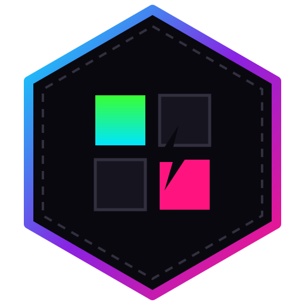
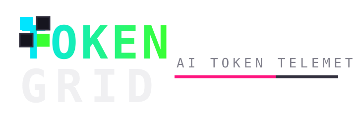

ASSET PACK / SVG
SVG SOURCES
Logo mark and stacked wordmark, editable and themeable.


| FILE | FORMAT | SIZE | PURPOSE |
|---|---|---|---|
| svg/logo-mark.svg | SVG | 1.2 kB | hex token-grid emblem, 512px |
| svg/logo-wordmark.svg | SVG | 1.1 kB | stacked TOKEN/GRID wordmark with meter bar |


◆ ../pack.json — full manifest · MIT · © Cybercore Tech